Backflow Preventer in Cincinnati, OH
Backflow test notice on the counter in Cincinnati, OH? HRL Plumbing tests the assembly, fixes it if it fails, and files the report.
- RPZ, PVB and DCVA Service
- Test Reports Filed for You
- Same-Visit Retests
- Local Cincinnati Testers
Backflow Preventer Leaking or Failed? We Fix It in Cincinnati, OH.
If your assembly fails, we can usually repair or rebuild it on the same visit and test it again.
Backflow Preventer Services in Cincinnati, OH
HRL Plumbing tests, rebuilds and installs backflow preventers for homes and businesses in Cincinnati, OH. A backflow assembly is a pair of spring-loaded check valves that only let water move one direction, from the main into your building. When they wear, they leak backward.
Our expertise includes:
- Assemblies for irrigation, fire and domestic lines
- Certified backflow testing and report filing
- Calibrated differential pressure gauges

Additional Plumbing Maintenance Services in Cincinnati, OH
Our maintenance and specialty plumbing services in Cincinnati, OH catch small problems before they become emergencies.
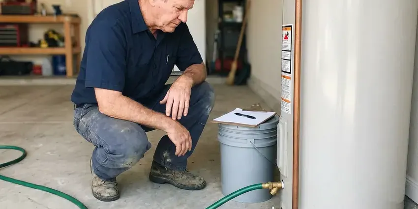
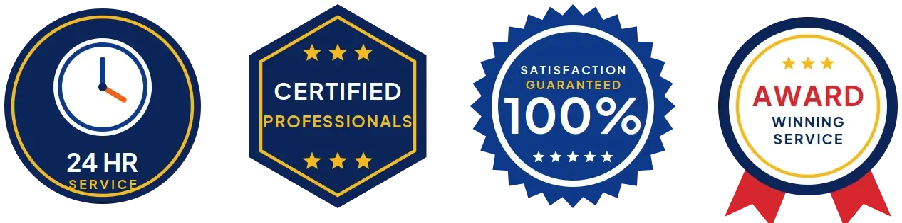
Water Heater Maintenance near Cincinnati

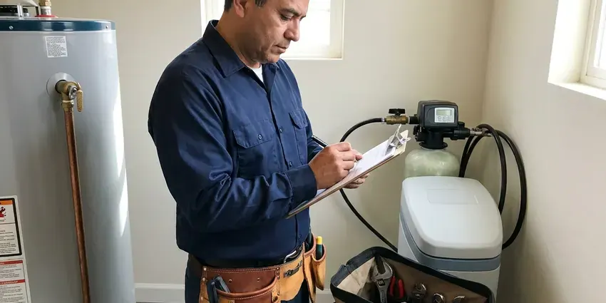
Residential Plumbing Service in Cincinnati
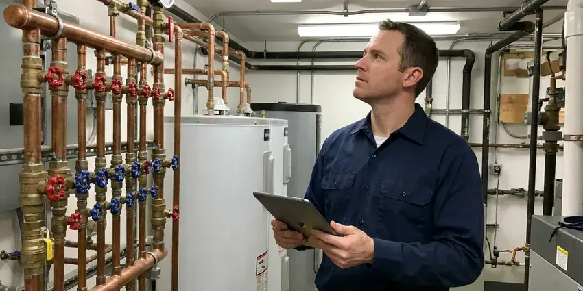
Commercial Plumbing in Cincinnati
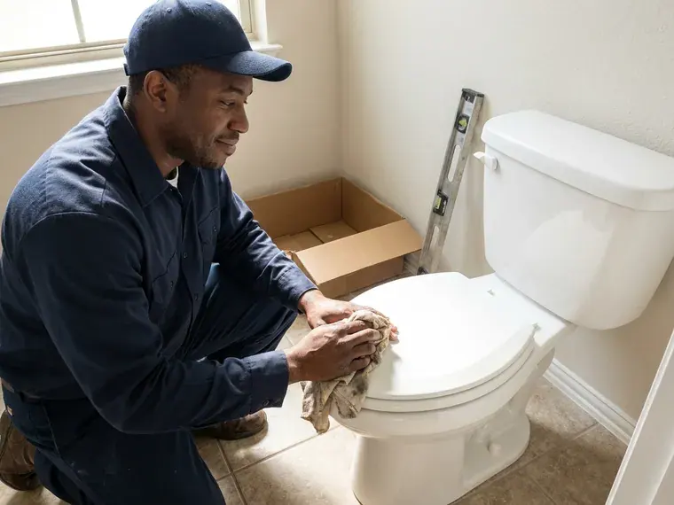
Customers
Why Choose HRL Plumbing for Backflow Preventer in Cincinnati, OH?
In Cincinnati, keeping a backflow assembly tested is usually a condition of water service. Licensing and permit rules can differ by city and county, so it pays to hire a plumber who knows local requirements. We know what the local program asks for. Each report goes in on the provider's own form with our gauge serial and calibration date, which keeps your file in order.
- Code Compliance, Assemblies are installed and tested to Cincinnati and state plumbing code and your water provider's program.
- Paperwork Handled, We submit test reports with your water provider on your behalf.
- Clean Water, Stops fertilizer, pool chemicals and boiler water from flowing back into your drinking supply.
Citywide Coverage
Backflow assemblies in every neighborhood of Cincinnati get tested by our crews, from older homes with one vacuum breaker to newer homes with full sprinkler systems. Every lot is a little different. Our testers know the usual places to look, so finding a buried or overgrown assembly does not eat up your appointment.
Experienced Team
Every HRL Plumbing tester is certified and works on backflow assemblies weekly. They read the gauge, find the sticky check or weak relief valve, and tell you if it is rubber or a cracked body. That saves guesswork.
Safety-First Approach
During a test, the water to the building is shut off for a short time. You hear from us before the shutoff, and we restore pressure slowly to avoid hammer and air at the taps. It is brief.
Trusted Certified Cincinnati Plumbing Services Professionals
At HRL Plumbing, we are proud to offer certified plumbing services throughout Cincinnati, OH. Credentials matter in this trade. Every repair, install and maintenance visit follows strict safety and quality rules, and the plumbers doing the work carry recognized industry credentials.
Call Us Now PHCC Plumbing Contractor Recognition
PHCC Plumbing Contractor Recognition Better Business Bureau (BBB) Accreditation
Better Business Bureau (BBB) Accreditation Angi Certified Pro
Angi Certified Pro ISO 9001 Quality Management Certification
ISO 9001 Quality Management CertificationLicensed Backflow Preventer Work in Cincinnati, OH
Backflow Preventer Repair in Cincinnati, OH
A failed test almost always comes down to rubber or debris. Hardened check discs, split diaphragms and grit on the seats are the usual causes, and one is all it takes. Springs wear too. We carry rebuild kits for Watts, Wilkins, Febco and Conbraco, which lets us fix most assemblies in Cincinnati without a second trip.
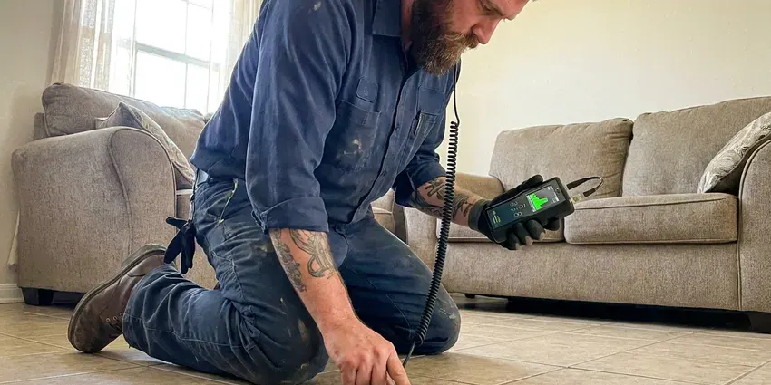
Emergency Backflow Service in Cincinnati, OH
Water running steadily from a backflow assembly is the most common urgent call we get. On a double check or PVB it usually means a cracked bonnet or a failed seal, and on an RPZ it means a check is leaking back. Shut both test valves. HRL Plumbing sends a tester to rebuild or replace it in Cincinnati, OH.
Commercial Backflow Compliance in Cincinnati
Commercial properties may have assemblies on domestic water, irrigation, fire lines and equipment. All test dates go into our tracking, we bundle them into fewer visits, and the reports go in as soon as testing wraps. You receive a status sheet. That keeps you ahead of the notices and away from surprise shutoffs.
Commercial Backflow Services in Cincinnati, OH
Commercial buildings in Cincinnati often have several assemblies on separate lines. A restaurant might have an RPZ on the domestic service, a double check on the fire line and a PVB on the irrigation, each with its own test date. We track them together. Early tests keep the brief shutoff away from your open hours.
Backflow Preventer Installation in Cincinnati
Domestic water, irrigation and fire lines each have their own rules. High-hazard lines get an RPZ, and lower-hazard lines usually get a double check, matched to what sits downstream. Then we confirm local Cincinnati code agrees. We give an RPZ space for its discharge and never put one in a pit that can fill with water.
Residential Backflow Solutions in Cincinnati
For most homes in Cincinnati, the backflow risk is the sprinkler system or a hose left in a bucket. Hose bibs get an atmospheric vacuum breaker that screws onto the spigot, and irrigation systems usually get a pressure vacuum breaker or a double check. Pools and boilers can call for an RPZ. We look at what is connected and install the device the hazard requires.
New Backflow Preventer Installation in Cincinnati
New sprinkler systems, fire lines and commercial equipment all need the right assembly for the hazard. We look at what is downstream, check local code and the water provider's rules, and size the device to the line and the flow. Height matters for a PVB. Every new assembly gets tested before it goes into service, and we file that first report for you.
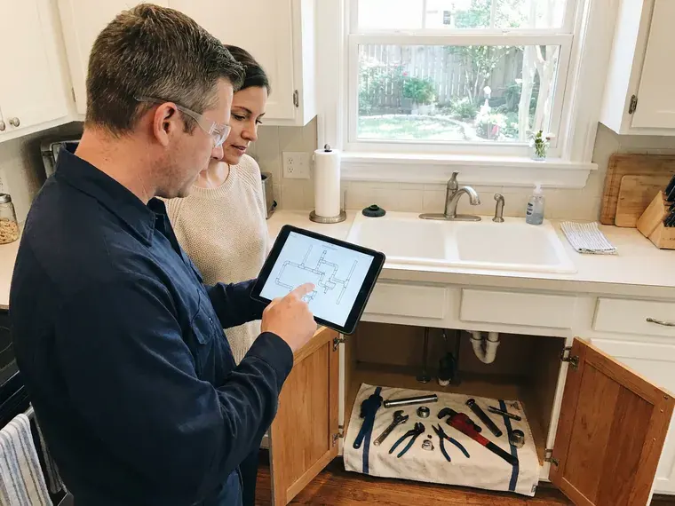
Backflow Repair vs. Replacement Cost in Cincinnati, OH
Rebuilding a failed assembly is usually the cheaper choice. Replacement makes sense when the body is cracked, parts are discontinued, or the device is the wrong type for the hazard downstream. You see both prices. You choose the option that fits your budget and compliance needs.
Backflow Preventer Near Me in Cincinnati, OH
Searching for a backflow preventer tester near you in Cincinnati, OH usually starts with a notice in the mail. HRL Plumbing knows Ohio common assembly types and how local water providers want reports filed. We move fast. Most homes get a test within a few days, which leaves time for a rebuild if the first test fails.
Looking for backflow testing near you in Cincinnati, OH? HRL Plumbing has certified testers working locally, each carrying a calibrated gauge and rebuild kits. Being close helps. We know where assemblies usually sit on local lots, beside the meter, in a front bed or on the wall of a mechanical room.
HRL Plumbing at a Glance
- Fully licensed plumbing team covering Cincinnati, OH
- 24/7 emergency service with same-day scheduling
- Clear written estimates, no hidden fees
- 4.9-star rated by 673+ Ohio customers
Cincinnati Map
Cincinnati Information
- Population
- 311,097
- Area codes
- 513/859/937
- Service area
- Cincinnati and communities within 40 miles
- Nearby
- Hamilton, Middletown, Kettering, Dayton
Pressure in a city main can drop fast during a main break or a hydrant flush, and that is when a backflow assembly in Cincinnati, OH earns its keep.
Expert Services
Reach out to HRL Plumbing for honest, reliable plumbing from people who know the trade in Cincinnati, OH.
Our Specialized Plumbing Services in Cincinnati, OH
At HRL Plumbing, we handle the full list of plumbing services across Cincinnati, OH. From leak detection to full system installs, our team works fast and charges fair prices on homes and commercial properties alike. Explore our core services below:
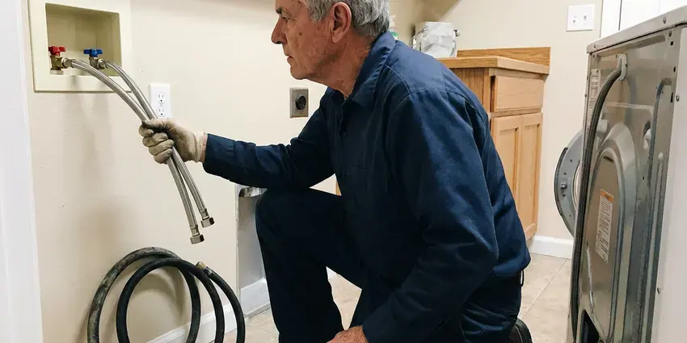
Plumbing Repair in Cincinnati
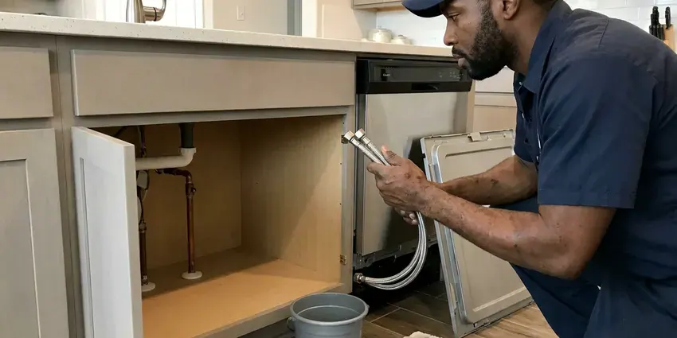
Kitchen Plumbing service for Cincinnati homeowners
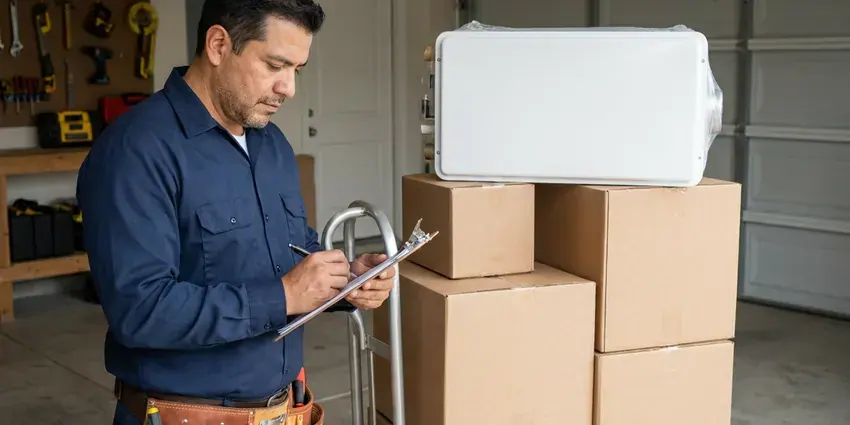
Cincinnati plumbing installation specialists
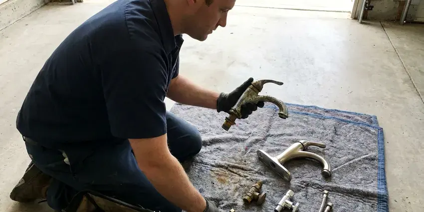
Cincinnati plumbing replacement specialists
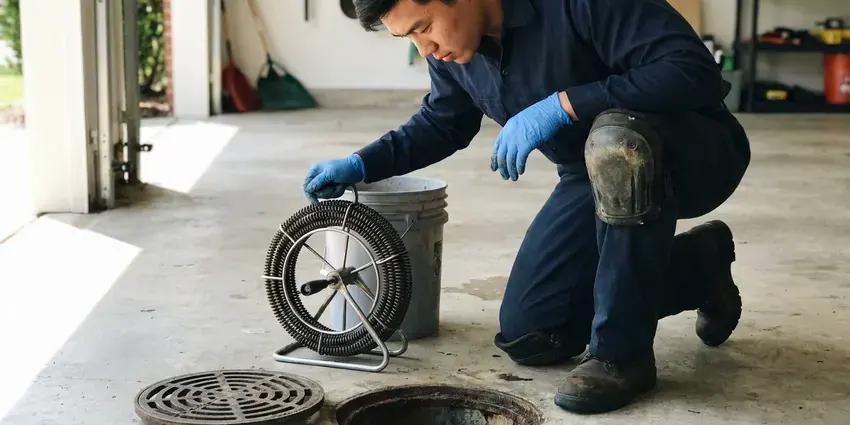
Professional drain services, Cincinnati
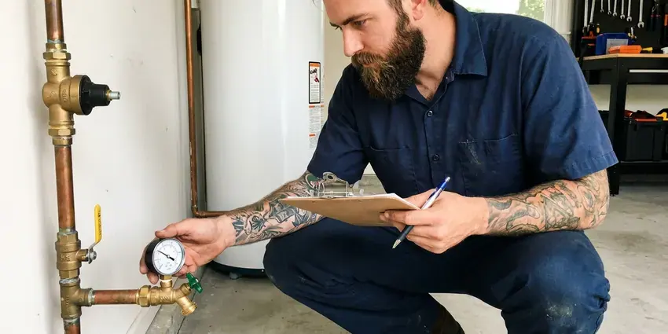
Professional plumbing maintenance, Cincinnati
How a Backflow Test Works in Cincinnati, OH
We test, rebuild and report, and we tell you what we find along the way.
Call for a Price
Call (740) 449-7505 with your test notice or a description of your assembly. We confirm pricing and schedule a certified tester.
Test the Assembly
We connect calibrated gauges and test every check and relief valve. Results are written up on your provider's form.
Repair and File
If the assembly fails, we rebuild or replace it and retest. Then we submit the passing report with your water provider.
Frequently Asked Questions About Backflow Preventer in Cincinnati
Annual residential testing runs $75 to $150 per assembly. Repairs with a rebuild kit typically run $150 to $450. New residential installs range from $300 to $1,200, and commercial RPZ assemblies often cost $1,500 to $5,000 installed once the drain and enclosure are included.
Watts, Febco, Zurn Wilkins, Apollo and other common brands. Our trucks carry rebuild kits for the popular models. Rare parts usually ship within a few days, and we book the repair as soon as they show up.
Testing must be done by a certified backflow tester using calibrated equipment. Reports from anyone else are rejected. The gauge also has to be calibrated within the past year, and that calibration date goes right on the report form.
Constant dripping from the relief valve, low water pressure and visible cracks are the usual signs. Discolored water also counts. Fixing it quickly keeps you compliant and avoids a follow-up letter.
We service reduced pressure zone assemblies, double check valve assemblies, pressure vacuum breakers and atmospheric vacuum breakers. Brands include Watts, Wilkins, Febco and Conbraco, along with Apollo and Zurn models that show up mostly on larger commercial lines. Kits for most are on the truck.
Installation and repair should be left to a licensed plumber who holds tester certification. Installing the wrong device, mounting a PVB too low or burying an RPZ in a pit can each fail inspection and leave the water unprotected. Fines can follow.
An RPZ has two checks with a relief valve between them, and it is rated for high-hazard lines. A double check has the two checks but no relief valve, which limits it to lower hazards such as many fire and irrigation lines. Code decides which one.
New installations and replacements often require a plumbing permit and an initial test. Each city and provider sets its own rules. We take care of the permit and the first test before the device goes live.
Hear From Customers Who Hired Our Plumbing Experts
Brian W.
I smelled gas behind the dryer and called right away. The plumber found a corroded flex connector, replaced it, and pressure tested the whole line before turning the gas back on. He let me watch the gauge hold steady for fifteen minutes.
Gas Line Repair · Dayton, OHNathan E.
Our tankless heater kept throwing an error code and shutting off mid shower. The tech flushed the heat exchanger, which was full of scale, and replaced a bad flow sensor. Hot water has been steady for half a year now.
Water Heater Repair · Middletown, OHPatricia H.
We had a slab leak that two other companies could not find. HRL Plumbing located it in under an hour with a listening device. They rerouted the line through the attic instead of breaking up the floor, so we kept our kitchen tile.
Slab Leak Repair · Dublin, OHDaniel K.
A pipe burst in the garage ceiling at 11 at night. Someone answered on the second ring, and the plumber was in my driveway about fifty minutes later. He shut off the main, cut out the split section, and had water back on before 2 am.
Emergency Plumbing · Kettering, OHJessica T.
We were adding a gas range in a kitchen remodel and needed a new line run from the meter. The plumber pulled the permit, ran the pipe through the crawl space, and had it inspected and approved within the week.
Gas Line Repair · Hamilton, OHCarlos V.
Our house still had galvanized pipe, and upstairs the shower was a trickle. The crew repiped everything in PEX over three days and patched every drywall hole before they left. The pressure difference is night and day.
Repiping · Dublin, OH